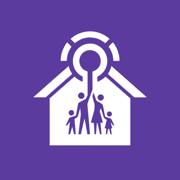

Beacon for MeshCore support
Beacon keeps your family or group connected over a MeshCore LoRa radio when there's no mobile signal: everyone on the map, who's safe, the emergency state and where to meet.

Email josephnle84@gmail.com. Please include your iPhone model, iOS version and your radio model.
Getting started
- You need a MeshCore radio running Companion (Bluetooth) firmware, such as a Heltec, RAK WisBlock, LilyGo T-Echo or Seeed T1000-E. Install or update it with the MeshCore web flasher at flasher.meshcore.co.uk.
- Open Beacon, pick your radio under Nearby MeshCore radios, and enter its PIN when iOS asks. Radios with a screen show the PIN; otherwise it's often 123456.
- In Menu → Radio admin → Radio, choose your region's preset. Everyone in your group must use the same one.
- Set up your group. One person taps Create a new group and shows the QR code (later: Menu → Invite to group). Everyone else taps Join with a QR code and scans it, or types the group name and key.
- Public is not a group: anyone nearby can read it, so Beacon never shares your location or status there. It stays in your Chats list as a fallback if you can't reach your group.
- No radio yet? Tap Try the demo on the first screen.
Common questions
My radio isn't listed.
Make sure it's on, nearby and not connected to another phone or the official MeshCore app. A radio talks to one phone at a time.
Pairing failed or the PIN is wrong.
In iOS Settings → Bluetooth, tap ⓘ next to the radio, choose Forget This Device, then connect again in Beacon.
I can't see the other members.
Check that everyone uses the same radio preset and the same group name and key. Show them Menu → Invite to group and have them scan it.
Does the map work offline?
Yes. Download your area in Apple Maps → your profile picture → Offline Maps before you lose signal.
Who can see my location?
Only people in the private group you choose. Beacon never shares location or status on the Public channel and has no servers. See the Privacy Policy.